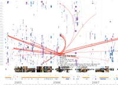

The Streams of Our Lives: Visualizing Listening Histories in Context


Venue. TVCG (2010)
Authors. Dominikus Baur, Frederik Seiffert, Michael Sedlmair, Sebastian Boring
Abstract. The choices we take when listening to music are expressions of our personal taste and character. Storing and accessing our listening histories is trivial due to services like Last.fm, but learning from them and understanding them is not. Existing solutions operate at a very abstract level and only produce statistics. By applying techniques from information visualization to this problem, we were able to provide average people with a detailed and powerful tool for accessing their own musical past. LastHistory is an interactive visualization for displaying music listening histories, along with contextual information from personal photos and calendar entries. Its two main user tasks are (1) analysis, with an emphasis on temporal patterns and hypotheses related to musical genre and sequences, and (2) reminiscing, where listening histories and context represent part of one's past. In this design study paper we give an overview of the field of music listening histories and explain their unique characteristics as a type of personal data. We then describe the design rationale, data and view transformations of LastHistory and present the results from both a laband a large-scale online study. We also put listening histories in contrast to other lifelogging data. The resonant and enthusiastic feedback that we received from average users shows a need for making their personal data accessible. We hope to stimulate such developments through this research.